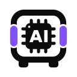
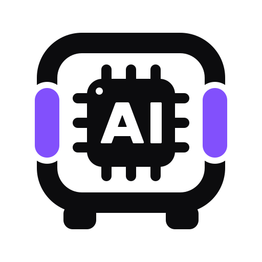
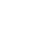
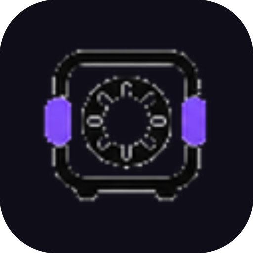
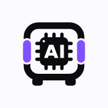
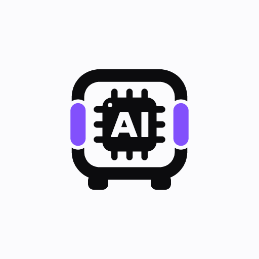
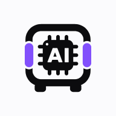

SVG

64
48
32
16

Same silhouette, re-drawn per size band. Small tiers are authored on their own pixel grid so every edge lands on a pixel.

#0f0d17Use mark-inverse.svg (snow ink) on dark surfaces; the ink mark is for light surfaces only.





Paper squircle so the ink never disappears on a dark dock or taskbar. ≤32 px keeps the pixel-grid tier at full bleed.
TIERS inside scripts/build_brand.py, then run python scripts/build_brand.py. Every file below is regenerated.| mark.svg | master mark, ink on transparent (512u viewBox) |
| mark-inverse.svg | master mark, snow ink for dark surfaces |
| icons/favicon-{16..256}.png | transparent favicon rung (tier picked per size) |
| icons/favicon.ico | 16+24+32+48 ICO bundle |
| icons/favicon.svg | paper rounded-square favicon |
| icons/icon-192/512.png | PWA icons (opaque paper) |
| icons/maskable-512.png | PWA maskable (content inside 80% safe circle) |
| icons/apple-touch-icon.png | iOS home screen (180, opaque) |
| icons/mark-white/-black.png | mono silhouettes |
| app/icon-{1024..32}.png | Electron build set (paper squircle) |
| app/app-icon.ico | Windows app icon (16..256) |
| app/mac.iconset/* | macOS bundle source |
| app/tray{,-light}{,@2x}.png | Electron tray silhouettes |
| logo-horizontal.{svg,png}, -dark.png | mark + wordmark lockups |
| wordmark.{svg,png} | standalone wordmark (outlined Inter) |
| src/tiers.png | optical tier QA strip |